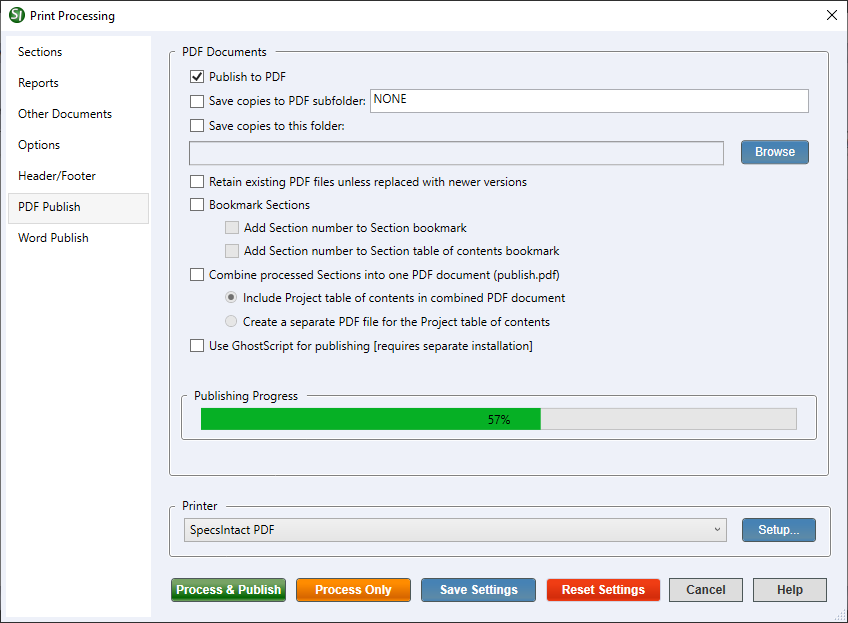
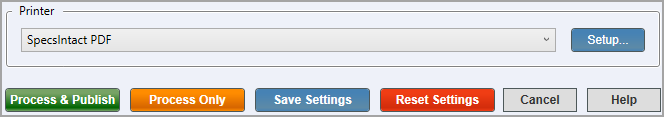

This command can also be executed from the SpecsIntact Explorer's Toolbar, Right-click menu, or by using the keyboard shortcut Ctrl+P.
The PDF Publish tab gives you comprehensive control over the generation of your PDF documents. It provides the flexibility to either create individual PDF documents for each file you've selected or to combine multiple documents into a single (publish.pdf) file. This allows you to customize your PDF output precisely to your needs, whether you require separate files for granular review or a consolidated document for a complete project deliverable.
Within this tab, there are various options for generating PDF versions for the selected Job, Master, or Section(s). A significant advantage is the ability to automatically organize the resulting PDF documents by activating a feature that saves your PDF documents into folders based on their Review Status or Amendment Level (e.g., Review Status - 30%, 60%, 90%, or Amendment Level - A, B, C, etc.). The Review Status and Amendment Level folders are customizable directly on the PDF Publish tab, or through the File menu > Properties > Schedule tab. This automated functionality enhances the workflow by ensuring your PDF outputs are always well-structured and easily manageable.
The available and default print processing options in SpecsIntact differ between Jobs and Masters, reflecting their distinct purposes and requirements.
When the publishing process begins, SpecsIntact will first perform Address ReconciliationThis process should be used in conjunction with Reference Reconciliation. It changes the Job's Sources for Reference Publications Section, making it unique to the Job by listing only the Sponsoring Organizations for References cited throughout the job. These changes appear in the output versions of the Section (.prn, .doc. and .pdf), not in the original .sec file, Reference Reconciliation,This process makes changes within the Reference Article of each Section so that it lists only those References that are actually cited in that Section's text. These changes appear in the output versions of the Sections (.prn, .doc and .pdf) not in the original .sec files and Submittal ReconciliationThis process changes the Job's Submittal Procedures Section, making it unique to the Job by listing only the Submittal Descriptions actually used throughout the Job. These changes appear in the output versions of the Section (.prn, .doc and .pdf) not in the original .sec file to produce the Processed (.prn) files prior to generating the PDF (.pdf) files. Any previous file of this name will be overwritten when this function is used. To avoid overwriting previously published PDF files, use the Save copies to this folder option to save a copy to an alternate location.
Although the SpecsIntact PDF printer is the recommended option, you still have the flexibility to publish to PDF using the Adobe PDF printer. Before you print using the Adobe PDF printer, it's important to uncheck Rely on system fonts only; do not use document fonts option within your Adobe PDF Printer preferences, external to SpecsIntact. If you uncheck this directly in SpecsIntact (either via the File menu > Printer Setup > Properties or the Process and Print/Publish > Setup > Properties), it will only stay unchecked until you close the application. To make this change permanent, refer to the 'How to Use This Feature' instructions.
Click the tabbed commands on the image below to see how to use each function.

- Publish to PDF - Provides the option to enable the Publish to PDF functionality to produce the PDF documents, which must be enabled.
- Save copies to PDF subfolder - Provides the option to process a set of PDF documents that corresponds to the Review Status / Amendment Level selected from the Job Properties > Schedule tab and save them in a separate folder (e.g., Review Status - 30%, 60%, 90%, or Amendment Level - A, B, C, etc.). This option is disabled for Masters, since there is no requirement for recording the Review Status or Amendment Level.
- Save copies to this folder - Provides the option to use the Browse button to save PDF documents to an alternative location outside of the Working Directory. This option can be used to promote team collaboration while leaving the original PDF documents in their default location within the SpecsIntact Working Directory. This location will not be retained or saved, even if you click the Save Settings button.
- Retain existing PDF Files unless replaced with newer versions - Provides the option to prevent the application from automatically deleting all existing PDF files within the designated destination folder or its subfolders when new PDFs are generated. When this is enabled, the system will only replace specific PDF documents that share the same name as the newly created ones, leaving all other unique files untouched. This gives you control over your file management, ensuring that only outdated versions are updated while other relevant documents are preserved.
- Bookmark Sections - Provides options to facilitate the creation of bookmarks within the Sections after they are published. This provides more control over how to implement and organize the bookmarks. This feature also generates detailed bookmarks for all subsequent levels, including PARTS, Articles, Paragraphs, and Subparagraphs (also known as Subparts). This creates a high-level and easily navigable Table of Contents within your published PDF, allowing users to quickly navigate through their PDF documents. Beyond creating the initial bookmarks, it offers two distinct methods, giving you greater flexibility in how you choose to implement and organize your bookmarks. This is particularly useful for enhancing navigation within lengthy documents, allowing users to quickly jump to specific Sections.
- Add Section number to Section bookmark - Provides the option to automatically include the Section number in your PDF documents. When enabled, the Section number will align directly with the Section title within the Section bookmark, enhancing clarity and navigation.
- Add Section number to Section table of contents bookmark - Provides the option to automatically include the Section number in your project's Section Table of Contents. To enable this feature, you must first select the Section Table of ContentsA Table of Contents can be generated for each section. The Section Table of Contents lists all the part and subpart headings in the section (with or without scope) on the Reports tab. The Section number will align directly with the Section title within the Section Table of Contents, enhancing clarity and navigation.
- Combine processed Sections into one PDF document (publish.pdf) - Provides the option to create a single PDF document from the selected Job, Master, or Section(s). To enable this feature, you must first select the Project Table of ContentsA Table of Contents can be prepared for the entire job. The Project Table of Contents lists all the sections included in the job (with or without scope) on the Reports tab.
- Include Project table of contents in combined PDF document - Provides the option to include the Project Table of Contents in the combined PDF document (publish.pdf).
- Create a separate PDF file for the Project table of contents - Provides the option to generate the Project Table of Contents as a PDF document that is independent of the main combined PDF document (publish.pdf). This allows you to have a standalone Tables of Contents file, offering greater flexibility for sharing, printing, or referencing it separately from the full project document.
- Use Ghostscript for publishing [requires separate installation] - Provides the option to alternatively use the third-party GPL GhostscriptIs a high quality, high performance PostScript and PDF interpreter and rendering engine. Fully supported by SpecsIntact as a third-party PDF publishing alternative requireing a separate installation application to publish your project to PDF. To learn about installing Ghostscript, refer to the SpecsIntact Installation Guide.
- Publishing Progress - Displays the progress creating PDF files using the SpecsIntact PDF
The SpecsIntact PDF printer must be installed and selected to publish using Ghostscript.
Process and Print/Publish common controls
The common controls for Process and Print/Publish appear consistently across all tabs, providing a unified experience.

- Printer - Provides the option to select a different printer while displaying the printer details. The last selected printer becomes the application's default printer.
- Setup button - Opens the Print Setup window, making it simple to choose your preferred printer, define the paper Size, Source, and Orientation, and even access networked printers. The Properties button allows you to change options based on the selected printer, such as the number of copies to be printed and to enable duplex or color printing, etc.
- Process & Publish / Process & Print button - Processes the Sections and applies the selections made on each tab, then sends a copy to the selected printer (e.g., hard copy or PDF).
- Process Only button - Processes the Sections, applies your selections, and saves the results to the project's Processed Files folder for your review.
- Save Settings button - Saves selections made on each tab, except for Sections chosen for processing and printing. The next time the Print Processing window is opened, the saved selections will automatically be the new defaults (e.g., Reports, Options, Header/Footer, etc.). When saving settings that are used frequently, make those specific selections first, click the Save Settings button, and then make the additional selections you need but do not want to save as permanent defaults.
- Reset Settings button - Restores any custom selections on the tabs back to the default settings.
How To Use This Feature
to Publish A Job or Master to PDF:
- In the SpecsIntact Explorer, select a Job or Master, then perform one of the following:
- Right-click and select Process and Print/Publish
- Click the Print/Publish button on the Toolbar
- Select the File menu and select Process and Print/Publish
- On the Sections tab, below Select Sections, perform one of the following:
- Select All Sections
- Select Some Sections
- On the Reports tab, below Reports, perform one of the following:
- Leave the default Reports selected
- Click the Unselect All button, to exclude the reports
- Below the Project or Master Table of Contents and Section Table of Contents, select the applicable options
- On the PDF Publish tab, below PDF Documents, select Publish to PDF
- To Save copies to PDF subfolder, perform one of the following:
- Leave the option unchecked
- Select Save copies to PDF subfolder, then enter the appropriate Review Status or Amendment Level (e.g., 30%, 60%, 90%, or A, B, C, etc.) into the field
- To Save copies to this folder, perform one of the following:
- Leave the option unchecked
- Select Save copies to this folder, click the Browse button to create or select an existing folder, then click Select Folder
- Select Retain existing PDF files unless replaced with newer versions
- Select Bookmark Sections, then perform one of the following:
- Select both options
- Select Add Section number to Section Bookmark
- Select Add Section number to Section table of contents
- To generate individual PDF documents or a combined PDF document, perform one of the following:
- For individual PDF documents, leave the Combine processed Sections into one PDF document (publish.pdf) unchecked
- For a combined PDF Document, select Combine processed Sections into one PDF document (publish.pdf)
- Click the Process & Publish button
To Modify Adobe Acrobat Settings In Windows 11:
Before using the Adobe PDF printer, you need to disable the Rely on system fonts only; do not use document fonts in Adobe's Printing Preferences. If you uncheck it from within the SpecsIntact File menu > Process and Print/Publish by clicking the Setup button, it is temporary and will revert when you close the application. To make this change permanent, proceed with the steps below:
- Close SpecsIntact
- In Windows, right-click on the Windows Start button, and select Settings, then perform one of the following:
- Select Bluetooth & devices, select Printers & scanners, select Adobe PDF, then select Printing preferences
- Below Recommended settings, select Printers & scanners , select Adobe PDF, then select Printing preferences
- On the Adobe PDF Printing Preferences window, uncheck Rely on system fonts only; do not use document fonts
- Click Apply and click OK
- Open SpecsIntact
To Change the Adobe PDF Printer Settings through Adobe:
- Close SpecsIntact
- Open a PDF document, select the File menu and select Print
- With the Adobe PDF printer selected, click the Properties button
- On the Adobe PDF Document Properties window, uncheck Rely on system fonts only; do not use document fonts
- Click OK
- In the Print window, click Cancel or Print
- Open SpecsIntact
Additional Learning Tools
Watch all of the eLearning modules within Chapter 4 - Process and Print/Publish and Chapter 6 - Correcting QA Report Errors and Discrepancies.